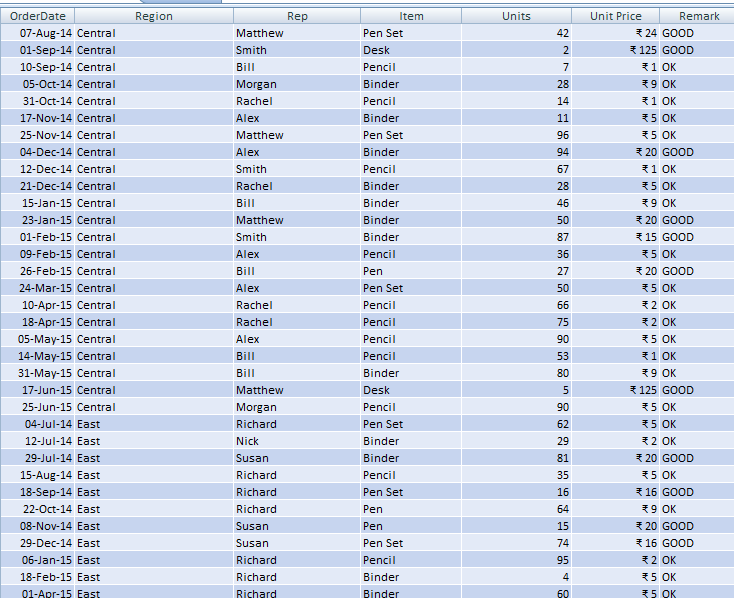

What is done?
Inially our dataset looked like the above image. After cleaning the data and little bit of formatting, the resultant dataset became more easy to understand where all the dates are in same format, representative names are in proper format, unit prices are being rounded off for easy calculation, a "Remark" column has been added and finally the table is sorted out on the basis of region as shown below.
How a formatted dataset is helpful to a Data Analyst?
Consistency:
A properly formatted dataset ensures consistency in data representation, making it easier for analysts to interpret and compare values across different records.Accuracy:
By removing duplicates and standardizing formats, the dataset becomes more accurate, reducing the risk of errors in analysis due to inconsistencies or incorrect data entries.Ease of Analysis:
Data analysts spend less time cleaning and preprocessing data and more time analyzing it when the dataset is well-formatted. This allows them to focus on exploring patterns, trends, and insights rather than dealing with data cleaning issues.Efficiency:
A formatted dataset enables analysts to perform analyses more efficiently. They can quickly access and manipulate the data without encountering unexpected issues or discrepancies.Interpretability:
h3Clear and consistent formatting makes the dataset more interpretable, facilitating communication of findings and insights to stakeholders. It ensures that everyone understands the data and the conclusions drawn from it.Data Integrity:
Data integrity is preserved through formatting, ensuring that the dataset maintains its quality over time. This is crucial for long-term analysis and decision-making processes.Overall, a well-formatted dataset lays the foundation for effective data analysis, enabling analysts to extract valuable insights and make informed decisions.